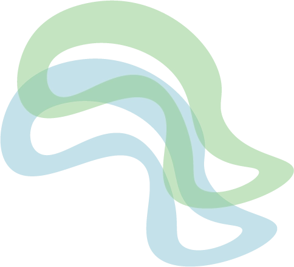
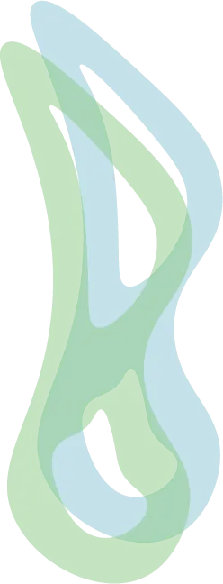
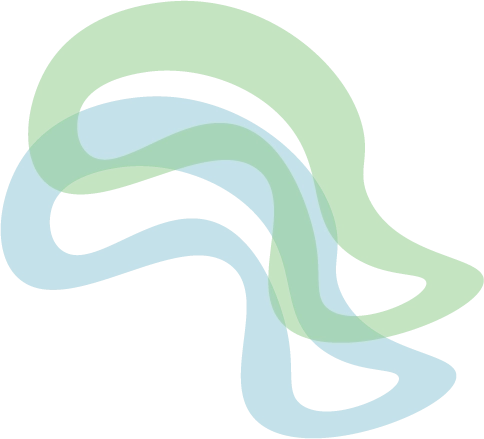
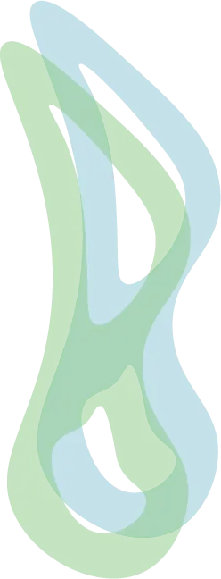
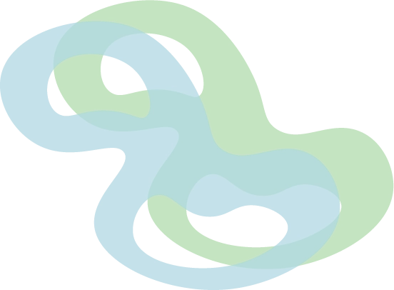
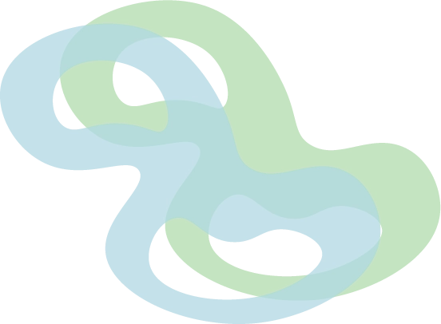
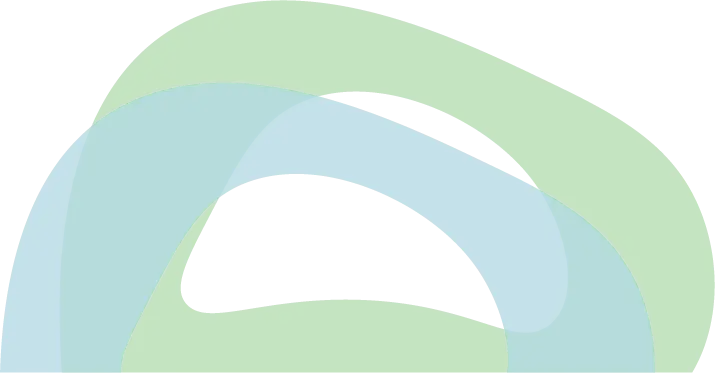
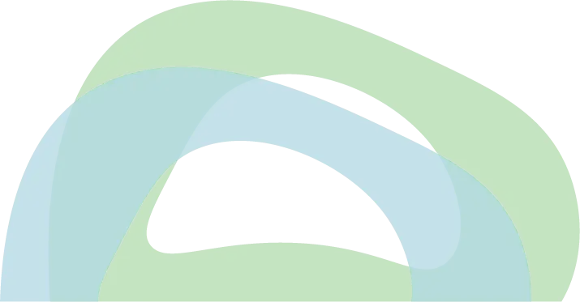

Pilsner
Den alkoholfrie pilsner fra TrøjborgBryg er brygget med omhu ved hjælp af nøje udvalgte ingredienser, der giver en velafbalanceret øl med en karakteristisk let bitterhed og en behagelig maltet undertone.
Den har en gylden farve og et forfriskende skum, der fuldender den autentiske pilsneroplevelse uden alkohol.
Med sin glatte tekstur og klassiske smag er denne alkoholfrie pilsner et glimrende valg for dem, der ønsker at nyde øl uden alkohol, uden at gå på kompromis med smagen.
Næringsindhold pr. 100 ml:
- Energi 160 kJ/38 Kcal
- Fedt 0,1 g
- Heraf mættede fedtsyrer 0 g
- Kulhydrat 3,0 g
- Heraf sukkerarter 0,2 g
- Protein 0,6 g
- Salt 0,01 g
Ingredienser:
- Vand
- Maltet byg
- Humle
- Gær

 




 


 
